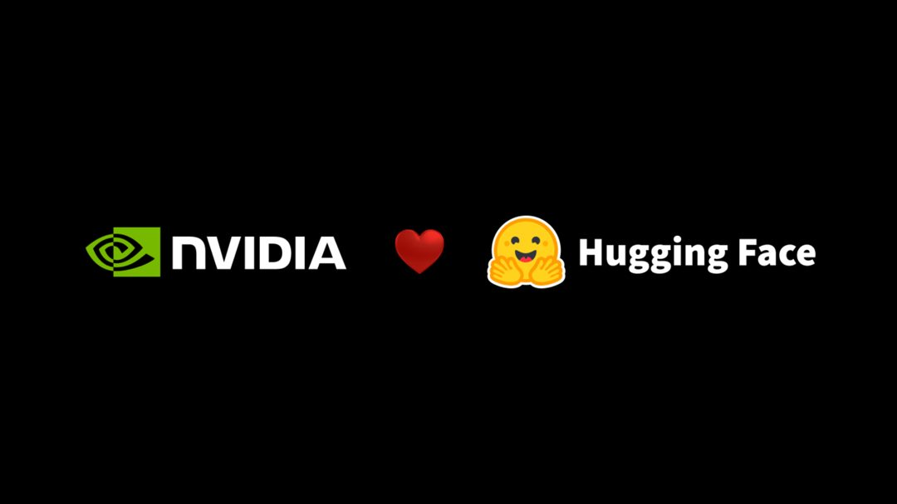
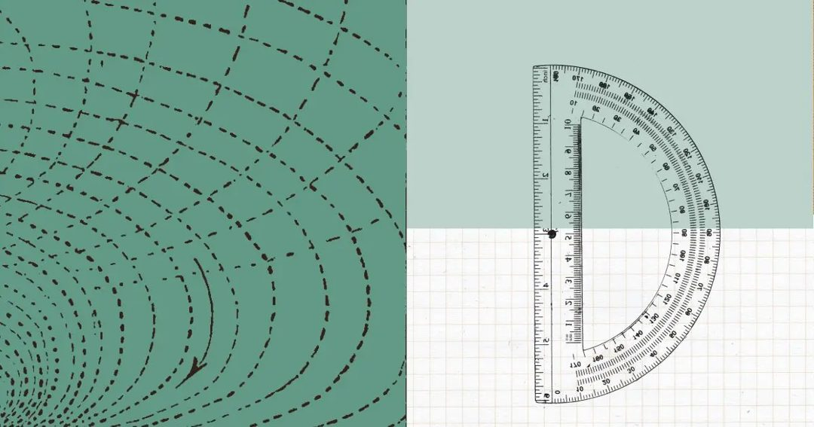
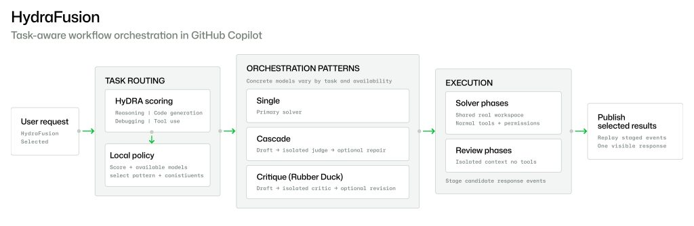
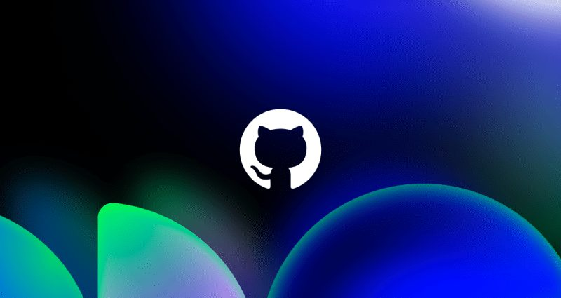
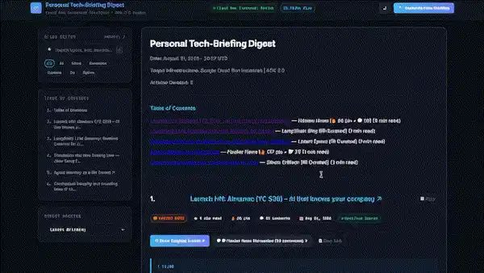
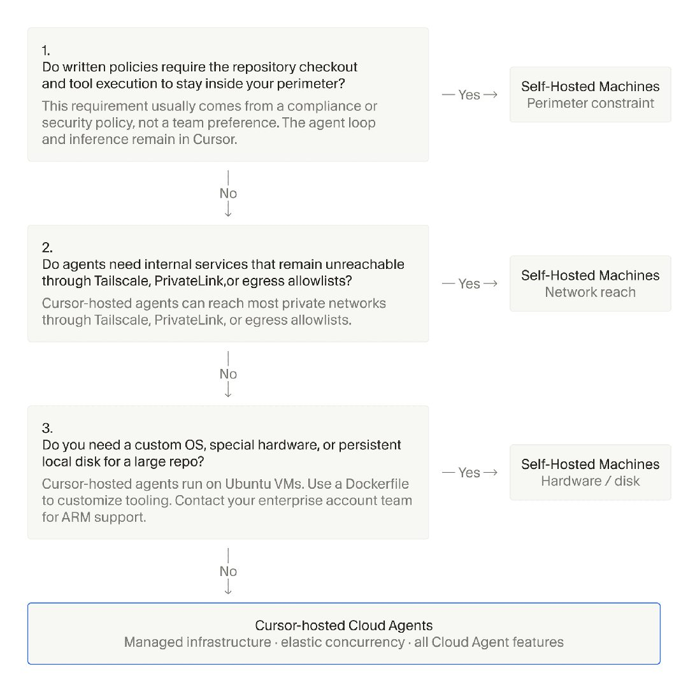

AI 雷达
9月9日 周三 · 每周 AI 精读
AI 雷达 · 9月3日-9月9日｜本周精读20条
官方更新
① NVIDIA 宣布以 129.303 亿美元收购 Hugging Face
NVIDIA 宣布以 129.303 亿美元收购开源 AI 模型与数据集托管平台 Hugging Face，黄仁勋在官方博客公布了这一消息。Hugging Face 2023 年估值为 45 亿美元，目前拥有超过 1800 万开发者，托管超过 300 万个模型、50 万个数据集和 100 万个应用，服务超过 20 万家企业。黄仁勋表示，开放模型能强化安全与网络安全、加速创新与扩散、支持主权 AI，让开发者、初创公司、大学和各国都能构建并定制 AI，NVIDIA 将成为 Hugging Face 及其社区和开放模型未来的好归宿。Hugging Face 联创 Thomas Wolf 确认了这笔交易，回顾团队自 2016 年以来的历程，称对用户当天没有任何变化，将继续把 Hub 打造为开放、独立、计算无关的平台，并借助 NVIDIA 的资源推进开源 AI。Peter Steinberger 转发评论这是绝佳组合。Perplexity CEO Aravind Srinivas 则表示，可便捷训练和部署开放模型的仓库对 AI 保持公众可及和有用至关重要，乐见 NVIDIA 以此支持开源社区。

图源：nvidia.com
官方更新 · NVIDIA Blog, NewsNow, Zeli, The Verge：AI, TechURLs, X：Peter Steinberger, X：Thomas Wolf（Hugging Face 联创/CSO）, TechCrunch：AI, X：Aravind Srinivas（Perplexity CEO）, X：Elvis Saravia, X：Kim, X：Clément Delangue（Hugging Face CEO）, X：Sundar Pichai, The Decoder：AI News, IT之家, X：Rohan Paul, X：Jensen Huang, Ars Technica：AI, X：Aidan Gomez, X：Satya Nadella, AIbase, Artificial Intelligence News · 28 个来源 · Buzzing · 1 个转载
原文：https://blogs.nvidia.com/blog/nvidia-to-acquire-hugging-face
② Anthropic 用 Claude 在 11 天内完成费马大定理首个机器验证的 Lean 形式化证明
Anthropic 于 9 月 4 日宣布，Claude 在基本自主运行 11 天后，完成了费马大定理首个端到端、经计算机检查的 Lean 形式化证明。该证明基于 Lean 4.33.1 和 Mathlib，遵循 Frey、Serre、Ribet、Wiles 及 Taylor-Wiles 的论证路线，以 Apache 2.0 协议开源发布。整个形式化过程生成了超过 1300 万行 Lean 代码，证明了 30,300 个定理，最终采用其中 29,500 个，整体规模达到 Mathlib 的五倍以上，是迄今最大的 Lean 证明。

图源：anthropic.com
官方更新 · Anthropic：Research, X：Anthropic, IT之家, Hacker News 热门, X：Kim, AIbase, Curated Media, TechURLs · 8 个来源 · Buzzing · 1 个转载
原文：https://www.anthropic.com/research/formalizing-fermats-last-theorem
③ OpenAI 发布 GPT-6 Astra，面向 Pro、Enterprise 和 Business Premium 用户开放
OpenAI 于 9 月 3 日发布旗舰模型 GPT-6 Astra，API 模型名为 gpt-6-astra，定价为每百万输入 Token 10 美元、输出 50 美元。该模型在电脑使用、浏览、软件工程及专业工作方面达到最先进性能，ARC-AGI 3 得分 99.9%，并被首次列为 Preparedness Framework 下关键级网络安全模型。总裁 Greg Brockman 称其可能已接近 AGI，并以 Welcome to the AGI era 结束发布。GPT-6 Astra 已在 ChatGPT Work 和 Codex 中向 Pro、Enterprise 和 Business Premium 用户开放，Plus 和 Business 用户的推送需数天时间，后续还将上线 AWS Bedrock。因企业安全客户先于高价 Pro 订阅者获得访问权限引发不满，CEO 奥尔特曼 9 月 4 日在 X 平台致歉，并提出补偿机制：自 9 月 4 日起，付费用户每缺少一天 Astra 访问即获一次额度重置。
官方更新 · X：OpenAI, Follow Builders, IT之家, NewsNow, The Decoder：AI News, X：小北, The Verge：AI, Simon Willison 博客, X：阿易 AI Notes, X：Testing Catalog, MarkTechPost, X：Sam Altman, X：Rohan Paul, X：Mark Chen, X：Sherwin Wu, X：Tibo, X：Kim, Curated Media · 26 个来源
原文：https://x.com/OpenAI/status/2095968413646737608
④ Gemini 3.8 Flash 与 3.8 Flash Cyber 正式发布
Google DeepMind 在六周内第三次更新 Flash 系列，发布 Gemini 3.8 Flash 与 3.8 Flash Cyber。Gemini Security Lead Raluca Ada Popa 介绍，3.8 Flash 定价维持每百万输入 token 0.75 美元、输出 3.75 美元不变，在 DeepSWE v1.1 上超越多数更大规模前沿模型，并在 Vals Finance Agent V2、Harvey's Legal Agent Benchmark 及 HLE-Verified（得分 54.9%）等测试中领先前代。性能提升源于执行更多推理步骤并迭代调用工具，高努力模式下可能消耗更多 token，可切换至低努力级别。同步推出的 3.8 Flash Cyber 专注漏洞检测与自动修补，通过 Fairwind Program 仅向受信防御者开放。两变体共享同一基础智能并由长运行 agentic 循环递归评估优化，网络安全训练反哺了通用编码与推理能力。该模型已接入 B.AI API。外界注意到这是六周内第三个预算级模型而前沿模型迟迟未更新，也有声音质疑其实际表现是否匹配基准成绩。
官方更新 · Google DeepMind, AIbase, Curated Media, TechURLs, NewsNow, Info Flow, Buzzing, Hacker News · 19 个来源
原文：https://deepmind.google/blog/introducing-gemini-3-8-flash-and-38-flash-cyber
⑤ Project HydraFusion：多模型协同编排，实现前沿级质量
HydraFusion 是一个多模型协同编排项目，旨在通过选择性编码工作流实现前沿级质量。在受控的离线评估中，HydraFusion 的选择性编码工作流在表现上匹配或超过了作为基线的 Opus 5，同时降低了估算的工作流成本。目前，该项目已作为研究预览版集成至 GitHub Copilot 中提供使用。

图源：github.blog
官方更新 · GitHub AI & ML · 1 个来源 · GitHub Blog · 1 个转载
原文：https://github.blog/ai-and-ml/github-copilot/project-hydrafusion-frontier-quality-via-multi-model-orchestration
⑥ WeatherNext 3 发布：我们迄今最先进、最精准的全球天气 AI 模型
WeatherNext 3 已正式发布，该模型直接利用实时卫星观测数据进行学习，每小时生成一次高分辨率预报，并新增了精确降水预测与清洁能源相关变量。在 Brightband 的独立实时评估中，它被评为目前最先进、最精准的全球天气 AI 模型。 分辨率方面，WeatherNext 3 可在多个空间尺度上输出结果：温度、湿度等关键地表变量达到 5 公里分辨率，其他地表变量为 10 公里，风速等大气变量为 25 公里。相比上一代 WeatherNext 2 在 25 公里网格上每 6 小时更新一次的规格，新模型提供的全球天气图景精细度提升了约五倍。 架构上，该系统将实时的一小时静止卫星图像拼接数据与传统历史分析数据共同输入一个 Functional Generative Network mesh transformer，能够同时输出密集的网格化气象场、离散的气旋路径，并原生支持站点级稀疏坐标的预测。目前 WeatherNext 3 已集成至 Search、Gemini、Maps、Google Maps Platform 及 Cloud 等产品线。
官方更新 · Google DeepMind · 1 个来源 · Google DeepMind：Blog · 1 个转载
原文：https://deepmind.google/blog/introducing-weathernext-3-our-most-advanced-and-accurate-global-weather-ai-model
⑦ Mistral 完成 30 亿欧元 D 轮融资，估值超 210 亿欧元
Mistral 宣布完成 30 亿欧元 D 轮融资，投后估值超过 210 亿欧元。公司在官方公告中称，这是欧洲科技公司有史以来最大的股权融资，距其成立仅三年。本轮资金将用于推动 sovereign、open-weight AI 成为技术前沿。同一时期，AI 数据中心新贵 Crusoe 也完成了 30 亿美元融资，估值达到 300 亿美元，并刚签下 130 亿美元大单。
官方更新 · Mistral AI：News, AIbase · 2 个来源 · Buzzing, Zeli, TechURLs · 3 个转载
原文：https://mistral.ai/news/mistral-makes-sovereign-open-weight-ai-to-frontier
⑧ OpenAI 宣布智能体群求解 Navier-Stokes 千禧年大奖难题
OpenAI 宣布分享 Navier-Stokes 千禧年大奖难题的一个解答。该问题探讨 Navier-Stokes 方程描述的光滑三维流体运动是否会被破坏，已约 90 年未解。此次证明由一组智能体完成，它们使用的是一个 OpenAI 下一代模型，其能力显著强于 GPT-6 Astra。
官方更新 · X：OpenAI · 1 个来源
原文：https://x.com/OpenAI/status/2097374640582668336
⑨ AI 新术语大揭秘：Loops、Harnesses、Squads、Hill Climbing……一文读懂！
GitHub Podcast 梳理了当前开发者对话中频繁出现的 AI 新术语，涵盖 loop engineering、harnesses、squads、open weights 及 hill climbing 等概念。该播客针对这些在技术社区讨论度较高的词汇进行了拆解与释义，旨在帮助开发者理解其在实际工程语境中的具体指代。内容聚焦于术语本身的定义与应用场景解析，未涉及具体产品发布或量化性能指标，仅对现有开发交流中的新兴表达进行系统性归纳说明。

图源：github.blog
官方更新 · GitHub AI & ML · 1 个来源
原文：https://github.blog/ai-and-ml/decoding-the-new-ai-lingo-loops-harnesses-squads-hill-climbing-oh-my
⑩ OpenAI 智能体团队宣布求解 Navier-Stokes 千禧年大奖难题并向独立证明者致贺
OpenAI 智能体团队宣布，一组智能体使用一个能力显著超过 GPT-6 Astra 的下一代模型，给出了 Navier-Stokes 千禧年大奖难题的解。该问题关注三维光滑流体运动的描述是否会失效，已悬置约九十年。 团队同时向 Levent Alpöge 和 Tristan Buckmaster 的数学工作致贺。
官方更新 · X：OpenAI · 1 个来源
原文：https://x.com/OpenAI/status/2097375276384567642
⑪ Google Cloud 教你用 Cloud Run instances 以每月 $5.70 搭建常驻 Agent
在云端全天候运行自主 AI Agent，每月成本可控制在 5.70 美元。标准 Serverless 容器无流量时缩容至零会终止后台循环并清空内存，多容器并发还会覆盖状态文件；常规虚拟机闲置也要 15 到 25 美元，fractional VM 需 7 美元且需自行管理基础设施。Cloud Run instances 提供始终在线的单一容器，共享 CPU 每月 5.70 美元，自带免费 HTTPS 端点并支持挂载云存储为本地磁盘。基于该方案搭建的个人科技简报 Agent 作为后台守护进程持续运行，每 30 分钟自动唤醒抓取 Hacker News 等资讯。Cloud Run instances 最长每 7 天自动重启一次，Agent 需在重启后恢复调度。它通过 POST /api/webhook 接收推送，过滤付费墙与广告后调用 Gemini 2.5 Flash 摘要，其输入 token 价格为每百万 0.30 美元，换用 Gemini 3.5 或 3.6 Flash 升至 1.50 美元。结果以 Markdown 格式连同已读 URL 存入挂载目录 /data，同时对外提供 Web 仪表盘供阅读。

图源：dev.to
官方更新 · Google AI：DEV 作者专属 · 1 个来源
原文：https://dev.to/googleai/build-a-long-running-agent-in-the-cloud-for-570month-113c
⑫ 面向政府与企业的主动式网络防御
Fairwind Program 现已启动，面向政府机构、关键基础设施运营商及核心技术平台等受信任合作伙伴提供受限访问权限，旨在利用先进 AI 能力主动解决大规模网络安全风险。该计划整合了 Gemini 3.8 Flash Cyber 模型与 CodeMender 工具，使防御者能够以代理级规模自主发现、验证并修复漏洞。相比传统前沿模型，该组合在保持专用推理能力的同时大幅降低运营成本，可将原本耗时数周的手动漏洞修复缩短至几分钟内生成经部署验证的补丁。目前全球已有超过 650 家合作伙伴参与，所有参与组织须遵守严格操作标准，包括将访问权限限制在内部网络安全、事件响应或渗透测试团队员工范围内，并部署多因素认证等保护措施，以确保相关 AI 能力被负责任地使用。
官方更新 · Google AI Blog · 1 个来源
原文：https://blog.google/innovation-and-ai/technology/safety-security/fairwind-program
⑬ Anthropic 讲解用 Claude Platform 降低成本并提升性能的三个方法
Anthropic 团队在一篇文章中提出，通过三种方法可以在不牺牲性能的前提下降低使用 Claude Platform 的成本。第一种方法是优化 prompt cache 的命中率；第二种是清除在升级到前沿 Claude 模型后依然保留的提示词反模式；第三种是对 effort 进行校准。文章指出，综合运用这三个手段即可实现降本增效的目标。
官方更新 · X：Claude Devs · 1 个来源
原文：https://x.com/ClaudeDevs/status/2097369738968195513
⑭ Hugging Face 发布开源工具 funes，为编码智能体提供可本地持有的记忆层
Hugging Face 发布开源工具 funes，为编码智能体提供可本地持有的记忆层。该工具支持 Claude Code、Codex、pi、Hermes 等编码智能体，核心机制是将已有的会话记录索引成 Lance 数据集。使用时只需执行一条 funes add 命令，即可让 Agent 自主召回原始出处，召回信息包含具体的 Agent、时间戳、会话及轮次。
官方更新 · Hugging Face：Blog · 1 个来源
原文：https://huggingface.co/blog/funes
⑮ xAI 设计 Grok Bot：为持久化智能体重构交互界面
xAI 在 Grok Bot 的设计中，将核心交互对象从单次会话重构为持久化智能体。Grok Bot 以 Bot 为主体，每个 Bot 拥有独立的身份、记忆、专属计算机和工具。 界面通过头像动效直观呈现 Bot 的六种运行状态：空闲、工作、等待、阻塞、思考和完成。用户在工作区对 Bot 的操作被划分为三级访问权限：状态查看、内容预览和直接接管。
官方更新 · xAI：News · 1 个来源
原文：https://x.ai/news/designing-grok-bot
⑯ Cursor 推出 Self-Hosted Machines，云智能体可在企业自有机器上执行
Cursor 发布 Self-Hosted Machines，将云智能体的工具执行环节迁移到企业自有网络内的机器上运行。在该架构下，智能体的循环、推理和规划过程依然保留在 Cursor 云端完成，只有具体的工具执行动作会下发到企业内部机器。 连接方式上，部署在企业机器上的 worker 通过出站的 HTTPS 连接与 Cursor 云端对接，Cursor 不会主动发起任何连入企业网络的请求。

图源：cursor.com
官方更新 · Cursor Blog · 1 个来源
原文：https://cursor.com/blog/self-hosted-machines
行业动态
① Anthropic IPO 推迟至中期选举前，最早 10 月中旬启动路演，目标估值 2 万亿美元
Anthropic 预计最早于 10 月中旬启动 IPO 路演，计划在 11 月美国中期选举前数日完成上市，招股书公开时间推迟至 9 月下旬。部分投资者给出的估值预期高达 2 万亿美元，目标募资 1,000 亿美元。若按此规模达成，将超越 SpaceX 约 1.77 万亿美元的上市估值纪录。 财务数据方面，Anthropic 年化营收已超过 650 亿美元，第二季度单季营收超过 115 亿美元，调整后营业利润已实现盈利。
行业动态 · IT之家 · 1 个来源
原文：https://www.ithome.com/0/998/630.htm
多源热议
① OpenAI GPT-6 Astra 在 ARC-AGI-3 上取得 SOTA 并超越人类动作效率基线
OpenAI 的 GPT-6 Astra 在 ARC-AGI-3 Semi-Private 上取得 SOTA，Standard harness 得分 62.7%（成本 $26K），Provider Adapter harness 得分 99.9%（成本 $19K），超越人类动作效率基线。该模型正向 ChatGPT Pro 和 Business 推送，部分用户在 ChatGPT Work 和 Codex 中看到；OpenAI 员工 thsottiaux 表示将尽快推送至全部 Plus 用户，API 发布也在准备中。Perplexity CEO Aravind Srinivas 称 Astra 在 WANDR 评测居首，将向 Perplexity Computer 的 Pro 和 Max 用户开放。安全上，Astra 幻觉少于 GPT-5.6 Sol，直接提示词注入防御率 99.99%，多轮自适应攻击降至约 67%。Rohan Paul 梳理系统卡指出其控制链式思维的能力从 16.1% 升至 60.9%，可监控性下降。此外，OpenAI 自 9 月 3 日发布官方公告以来多次修改评测基准数据，幻觉率曾从 4.2% 降至 2% 后又改回。
多源热议 · Hacker News 热门, NewsNow, The Decoder：AI News, X：Rohan Paul, IT之家, X：Testing Catalog, X：Aravind Srinivas（Perplexity CEO）, TechURLs, Zeli, Buzzing, Hacker News, Info Flow · 27 个来源 · Buzzing, Hacker News · 2 个转载
原文：https://arcprize.org/blog/astra
② Meta 发布 Muse Spark 1.3，Intelligence Index 得 61-62 分逼近 Claude 与 GPT-5.6
Meta 在五个月内发布了第四个 Muse Spark 版本 Muse Spark 1.3。其 max 变体目前仅向合作伙伴限时预览，在 Artificial Analysis Intelligence Index 上得 62 分；xhigh 版得 61 分，逼近 Claude 与 GPT-5.6。该模型被定位为智能体编码模型，相比 Muse Spark 1.2 工具调用量减少约 20%，Token 消耗降低约 25%，同时提升了科学推理能力，且价格维持不变。有评论指出，OpenAI 与 Anthropic 之间的竞争格局在短时间内已发生变化，并认为 Gemini 已被甩开。
多源热议 · X：Kim, AIbase, X：Alexandr Wang（Scale AI 创始人/Meta 首席 AI 官）, Curated Media · 4 个来源
原文：https://x.com/kimmonismus/status/2095265444999410146
③ AI医疗版图大扩张：Anthropic 持续加码，密集收购与布局生物技术赛道
Anthropic 正加速向医疗与生命科学领域扩张，通过专职招聘经理密集推进对 AI 生物技术公司的收购、投资与合作，战略覆盖从药物发现到临床开发的核心环节。此前，该公司以约四亿美元股票交易收购了成立仅八个月的 AI 生物技术初创公司 Coefficient Bio，原团队已并入其医疗与生命科学部门，此举意在快速获取实验室经验。在资本层面，Anthropic 在完成尽职调查后放弃了以约六十亿美元收购 AI 初创公司 Decart 的交易。技术工具方面，Anthropic 推出了研究平台 Claude Science，可整合多种研究工具并调用专业模型辅助研究人员；同时发布了 MHS 模型硬件标准的研究预览版，试图通过统一设备控制接口降低实验过程中的接入与协调成本，使模型能力贯通软件、算力与物理设备。该开放接口允许其他类似模型接入，但其复用性及能为一线研究者节省多少实际时间仍有待观察。
多源热议 · AIbase, TechURLs · 3 个来源
原文：https://www.aibase.com/news/30889
以上内容由 AI 雷达 自动整理自9月3日-9月9日的公开信源，图片来自原文页面，原文出处链接见每条信息下方。